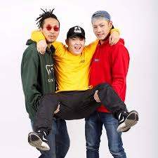
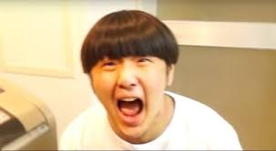

好きなYoutuberランキング
第1位
第2位
第3位

堂々の第一位はチャンネルガードマンというチャンネルです。21歳という若さでラップもしていてどんな場面でも例えやぼけを思いつくところがすごいと思うし面白いです。相棒のMYとのツッコミやボケを連発するところが見所です。

企画内容は主にドッキリで「家を水没させてみた」など壮大なスケールでやらせなしでやっています。ドッキリをされたときのリアクションもとてもオーバーで面白いです